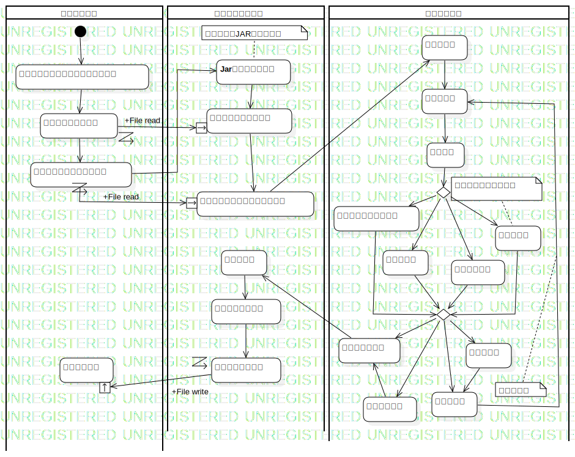
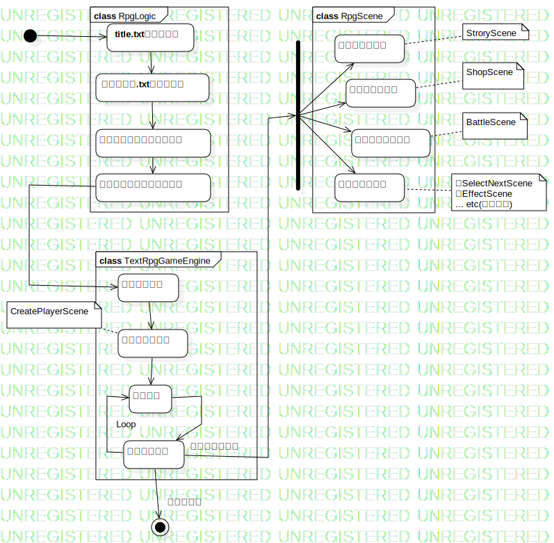

アクティビティ図一式
UMLActivity
TextRpgDiagrams
::
アクティビティ図一式
Description
none
Diagrams

全体の処理フロー

フレームワークの動き
Groups
外部ファイル
システムを動かす
ゲームで遊ぶ
Nodes
InitialNode1
title.txtの読み込み
ストーリー.txtの読み込み
シーンオブジェクトの生成
シーン開始フラグの初期化
タイトル表示
プレーヤー生成
シーンの実行
入力受付
ストーリー実行
店舗買い物実行
バトルシーン実行
その他イベント
ForkNode1
ActivityFinalNode1
InitialNode2
ゲームブックのストーリーを考える
ストーリーテキストの作成
Jarファイルを起動
ゲーム開始
シーン開始
DecisionNode1
選択しあり
次のシーン
終了ステータス
ゲームデータ更新
保存ファイル
Edges
(InitialNode1→title.txtの読み込み)
(title.txtの読み込み→ストーリー.txtの読み込み)
(ストーリー.txtの読み込み→シーンオブジェクトの生成)
(シーンオブジェクトの生成→シーン開始フラグの初期化)
(タイトル表示→プレーヤー生成)
(プレーヤー生成→入力受付)
(入力受付→シーンの実行)
(シーン開始フラグの初期化→タイトル表示)
Loop (シーンの実行→入力受付)
各シーンの実行 (シーンの実行→ForkNode1)
(ForkNode1→ストーリー実行)
(ForkNode1→店舗買い物実行)
(ForkNode1→バトルシーン実行)
(ForkNode1→その他イベント)
終了シーン (シーンの実行→ActivityFinalNode1)
(InitialNode3→ゲームブックのストーリーを考える)
(ゲームブックのストーリーを考える→設定ファイルを編集)
(設定ファイルを編集→ストーリーテキストの作成)
(ストーリーテキストの作成→Jarファイルを起動)
File read (設定ファイルを編集→)
(Jarファイルを起動→設定ファイル読み込み)
File read (ストーリーテキストの作成→)
(設定ファイル読み込み→ストーリーテキストの読み込み)
(ストーリーテキストの読み込み→ゲーム開始)
(ゲーム開始→シーン開始)
(シーン開始→イベント)
(イベント→DecisionNode1)
(DecisionNode1→プレーヤー作成シーン)
(DecisionNode1→店舗シーン)
(DecisionNode1→効果シーン)
(DecisionNode1→バトルシーン)
(プレーヤー作成シーン→DecisionNode1)
(店舗シーン→DecisionNode1)
(バトルシーン→DecisionNode1)
(効果シーン→DecisionNode1)
(DecisionNode1→選択しあり)
(選択しあり→次のシーン)
(DecisionNode1→次のシーン)
(次のシーン→シーン開始)
(DecisionNode1→終了ステータス)
(終了ステータス→ゲーム終了)
(DecisionNode1→ゲームクリア)
(ゲームクリア→終了ステータス)
(ゲーム終了→ゲーム内容を保存)
(ゲーム内容を保存→ゲームデータ更新)
File write (ゲームデータ更新→)
Properties
Name
Value
name
アクティビティ図一式
stereotype
null
visibility
public
isReentrant
true
isReadOnly
false
isSingleExecution
false
Owned Elements
全体の処理フロー
フレームワークの動き